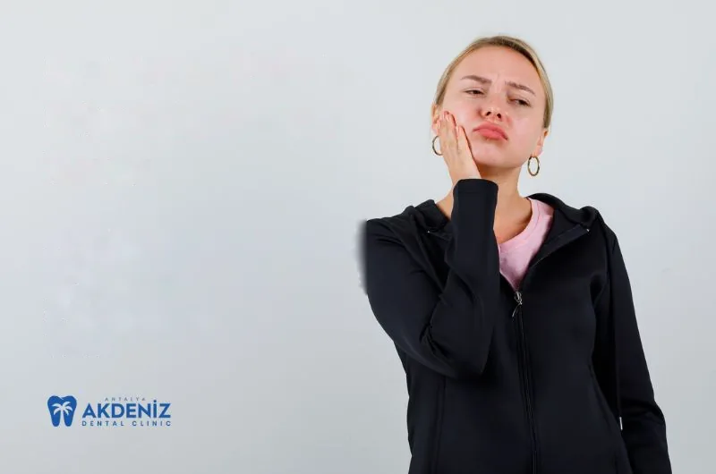

Cauzele durerii în pomeți și dințiDurerea resimțită în pomet (osul zigomatic) și în dinți este o afecțiune complexă, cauzată de apropierea anatomică a acestor zone și de legăturile dintre rețelele lor nervoase. Adesea, durerea se răspândește dintr-o zonă în alta.Durerea resimțită în pomete (osul zigomatic) și în dinți este o afecțiune complexă, care apare din cauza apropierii anatomice a acestor zone și a legăturilor dintre rețelele lor nervoase. Durerea tinde adesea să se extindă dintr-o zonă în alta.
Ce cauzează durerea în pomete și dinți?
Durerea cu originea în țesutul nervos dentar
Inflamația reversibilă a nervului:
Factori precum cariile, obturațiile adânci sau eroziunea smalțului pot ajunge la nervul din interiorul dintelui și îl pot sensibiliza temporar, dar nu provoacă leziuni permanente. Această afecțiune poate fi tratată de un medic stomatolog.
Este o durere ascuțită și bruscă, care apare doar atunci când mâncați sau beți ceva fierbinte, rece sau dulce. Ea dispare de la sine în 10–15 secunde după îndepărtarea factorului iritant.
Durerea este resimțită de obicei doar în dintele afectat, cu o iradiere ușoară și de scurtă durată spre pomete.
Articol similar: Faceți clic pentru sfaturi de ameliorare a durerii acasă.
Inflamația ireversibilă a nervului:
Țesutul nervos al dintelui se inflamează permanent și nu se mai poate vindeca singur. De obicei, cauza este o carie adâncă, netratată timp îndelungat. În acest caz, nervul dintelui nu mai poate fi salvat. Caracteristicile durerii:
Moartea nervului și abcesul:
Durerea cu originea în gingii și țesuturile din jur
Abcesul gingival:
Infecția gingivală severă:
Dinți incluși sau problematici
Infecția măselei de minte (pericoronarita):
Presiunea dintelui inclus:
Mai ales la maxilarul superior, măselele de minte incluse pot exercita presiune asupra molarului vecin și a peretelui sinusal, provocând o durere profundă, surdă, în pomete.
Durerea cu originea în articulația temporo-mandibulară și mușchii masticatori
Sindromul de durere musculară:
În mușchii masticatori principali (mușchiul maseter) din zona obrazului și în mușchii din regiunea tâmplei apar puncte hipersensibile. Încleștarea și scrâșnirea dinților (bruxismul) sunt cele mai importante cauze.
Caracteristicile durerii: durere surdă, profundă și persistentă în zona pometelui și a maxilarului. Se observă rigiditate musculară dimineața și deschiderea limitată a gurii.
Afecțiunile articulației maxilarului:
Deplasarea discului articular: când „perna” (discul) articulației maxilarului se deplasează înainte, la deschiderea și închiderea gurii se aude un „clic” sau un „pocnet”. Dacă discul este complet deplasat și provoacă blocarea, deschiderea gurii devine foarte dificilă.
Calcifierea articulației: ca urmare a uzurii cartilajului articular, durerea crește la deschiderea gurii, la mestecat și pe vreme rece, iar în articulație se simte un zgomot de trosnet.
Durerea cauzată de sinuzită
Vârfurile rădăcinilor molarilor și premolarilor superiori se află foarte aproape de planșeul sinusului maxilar. Când mucoasa care căptușește interiorul sinusurilor se inflamează și canalele sinusale se blochează, mucusul acumulat și presiunea din interior provoacă durere.
Caracteristicile durerii:
Durerea facială de origine nervoasă
Aceasta apare atunci când nervul trigemen, care transmite sensibilitatea feței, este comprimat, de obicei de un vas de sânge, sau iritat din cauza unor afecțiuni precum scleroza multiplă (SM).
Caracteristicile durerii:
Alte cauze rare
Extinderea infecției dentare:
Dacă un abces dentar nu este tratat, infecția se poate extinde în osul maxilar (osteomielită) sau în țesuturile moi (celulită), provocând durere severă și difuză, febră și stare generală de rău
Durerea facială inexplicabilă:
Este o durere persistentă și rebelă, a cărei cauză nu este pe deplin înțeleasă și care este adesea asociată cu factori psihologici.
Durerea de origine cardiacă:
Deși foarte rar, un infarct (mai ales la femei) poate provoca durere care iradiază spre spate, maxilar și zona obrazului stâng.
Când trebuie să mergeți la medic pentru durerea în pomete și dinți?
Dacă aveți oricare dintre simptomele de mai jos, nu încercați să vă puneți singur diagnosticul sau să vă tratați singur. Ajutorul medical de specialitate vă va calma rapid durerea și va preveni eventualele complicații grave. Diagnosticul și tratamentul precoce dau întotdeauna rezultate mai bune.
Urgențe (necesită tratament în aceeași zi):
Durere severă și persistentă:
Umflătură vizibilă a feței sau a maxilarului:
Febră și oboseală:
Dificultăți la înghițire sau la respirație:
Deschiderea limitată a gurii:
Situații care necesită o vizită la stomatolog în 24 de ore:
Durere care durează mai mult de 24 de ore:
Dinte mobil sau rupt:
Sângerarea și inflamația gingiilor:
Amorțeală sau furnicături la nivelul feței:
Zgomote anormale ale maxilarului:
La ce medic/secție ar trebui să mergeți?
În primul rând, la medicul stomatolog.
Secții la care puteți fi trimis, dacă este necesar: